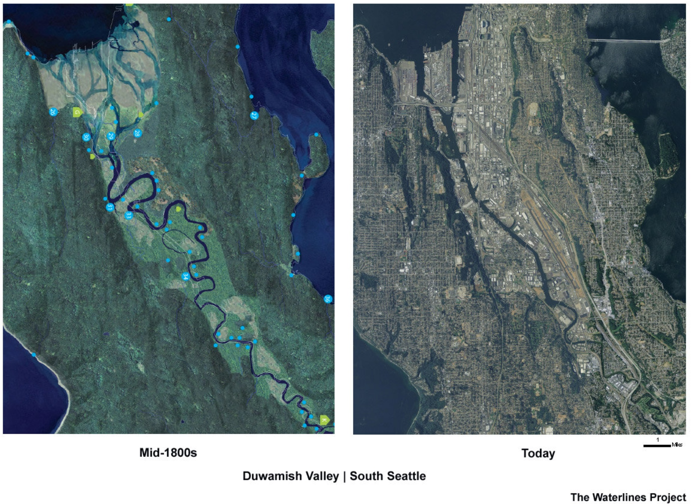

Clawing Catastrophe
CSE 493F - Prototyping Interactive Systems with AI

The Lower Duwamish River Superfund site is a 5-mile stretch of Seattle's only river. It was dredged, straightened, and built into the industrial hub of the city, excessively polluting its waters. Being a longtime source of food, tradition, and culture for Indigenous people, the destruction of the Duwamish River disproportionately affects Duwamish and other Native peoples.